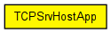
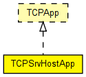

This module hosts TCP-based server applications. It dynamically creates and launches a new "thread" object for each incoming connection.
Server threads should be subclassed from the TCPServerThreadBase C++ class, registered in the C++ code using the Register_Class() macro, and the class name should be specified in the serverThreadClass parameter of TCPSrvHostApp. The thread object will receive events via a callback interface (methods like established(), dataArrived(), peerClosed(), timerExpired()), and can send packets via TCPSocket's send() method.
Example server thread class: TCPGenericSrvThread (in the C++ documentation only).
IMPORTANT: Before you try to use this module, make sure you actually need it! In most cases, TCPGenericSrvApp and GenericAppMsg will be completely enough, and they are a lot easier to handle. You'll want to subclass your client from TCPGenericCliAppBase then; check TelnetApp and TCPBasicClientApp for examples.
Compatible with both IPv4 and IPv6.
The following diagram shows usage relationships between types. Unresolved types are missing from the diagram. Click here to see the full picture.
The following diagram shows inheritance relationships for this type. Unresolved types are missing from the diagram. Click here to see the full picture.
| Name | Type | Default value | Description |
|---|---|---|---|
| address | string | "" |
may be left empty ("") |
| port | int | 1000 |
port number to listen on |
| serverThreadClass | string |
class name of "thread" objects to launch on incoming connections |
| Name | Value | Description |
|---|---|---|
| display | i=block/app |
| Name | Direction | Size | Description |
|---|---|---|---|
| tcpIn | input | ||
| tcpOut | output |
// // This module hosts TCP-based server applications. It dynamically creates // and launches a new "thread" object for each incoming connection. // // Server threads should be subclassed from the TCPServerThreadBase // C++ class, registered in the C++ code using the Register_Class() macro, // and the class name should be specified in the serverThreadClass // parameter of TCPSrvHostApp. The thread object will receive events // via a callback interface (methods like established(), dataArrived(), // peerClosed(), timerExpired()), and can send packets via TCPSocket's send() // method. // // Example server thread class: TCPGenericSrvThread (in the C++ documentation only). // // IMPORTANT: Before you try to use this module, make sure you actually need it! // In most cases, TCPGenericSrvApp and GenericAppMsg will be completely // enough, and they are a lot easier to handle. You'll want to subclass your // client from TCPGenericCliAppBase then; check TelnetApp and TCPBasicClientApp // for examples. // // Compatible with both IPv4 and IPv6. // simple TCPSrvHostApp like TCPApp { parameters: string address = default(""); // may be left empty ("") int port = default(1000); // port number to listen on string serverThreadClass; // class name of "thread" objects to launch on incoming connections @display("i=block/app"); gates: input tcpIn @labels(TCPCommand/up); output tcpOut @labels(TCPCommand/down); }